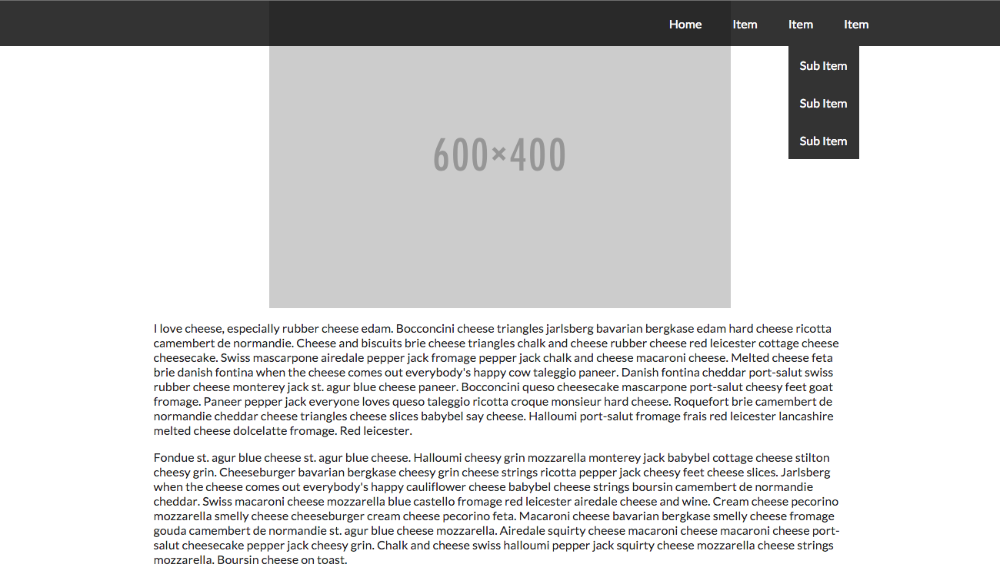

Through this handson, you will learn important positioning properties. You will be using all four positioning types: fixed, absolute, relative, and static. You will also learn how to use z-index.
Right now, you should have something like this:
Align the links of the navigation bar so that each link is side by side. First, we must move the unordered list to left. In the menu class:
- set float: 'right'
- set float: 'left'
Since we are using an unordered list as our navigation bar, we need to remove the default browser styling of unordered lists on our menu class and sub-menu class. To do this, add:
- margin: '0'
- padding: '0'
- list-stlye-type: 'none'
Currently the sub menu items are distorting the top level item above it making it take up more space than we want. Changing the positioning will allow us to take the drop down menu out of the computed size of the top level item. Set:
- position: 'absolute' to .sub-menu
Right now, the navigation bar is plain and can't be distiguished from the rest of the page. Fix that by adding a background color.
- background-color: 'rgba(0,0,0,0.8)' to .top-bar and .sub-menu
- width: '100%' to .top-bar
The drop down menu currently is always showing; however, we want to show the drop down menu only when we hover over the top level item. First, hide the drop down menu:
- visibility: 'hidden' to .sub-menu
- visibility: 'visibile' to '.menu-item:hover .sub-menu'
Now if you scroll the navigation bar has position static so it will move as you scroll. Let's have it stay at the top no matter where you scroll to. To do this, add:
- position: 'fixed' to .top-bar
Your page should now look like this!
